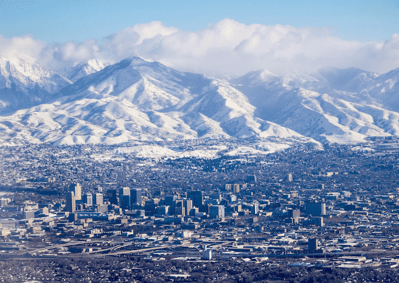

Colton Michael Condie | WDD 130
Hey There! My name is Colton Michael Condie. I am from West Jordan, Utah, USA. I enjoy working with my hands,
Sports, and spending time with my Family.
Utah

Utah is a state in the western United States. It is bordered by Colorado to the east, Wyoming to the northeast, Idaho to the north, Arizona to the south, and Nevada to the west. It also touches a corner of New Mexico in the southeast. The state is a center of transportation, education, information technology, and research, and a major tourist destination for outdoor recreation. Salt Lake City, the state capital and largest city, is home to the headquarters of The Church of Jesus Christ of Latter-day Saints (LDS Church).